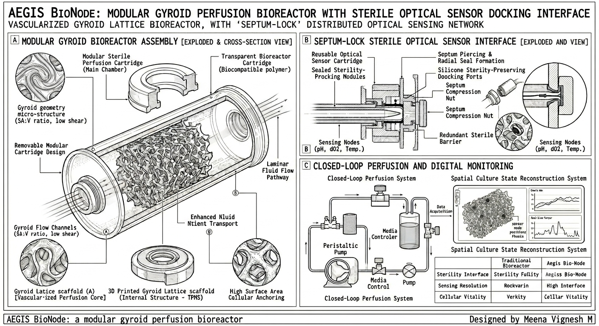

Modular Gyroid Perfusion Bioreactor with Sterile Optical Sensor Docking Interface
Biotechnology Bioreactor Engineering Smart Monitoring Tissue EngineeringAEGIS BioNode is a conceptual intelligent bioreactor platform designed to combine advanced geometric architecture, controlled perfusion, and modular sensing technology.
The system uses a vascular-mimetic gyroid lattice structure to create interconnected transport pathways while introducing a sterile modular sensor interface that allows monitoring without permanently integrating sensitive electronics into the reactor environment.
The goal is to develop a future-ready bioprocessing platform capable of improving understanding of internal culture conditions through distributed monitoring and computational analysis.

A triply periodic minimal surface lattice designed for:
A proposed sterile docking architecture that separates reusable sensing components from the disposable reactor cartridge.
Distributed sensing concept for tracking important reactor conditions.
The primary innovation direction of AEGIS BioNode is the integration of a modular sterile sensing architecture with a structured perfusion environment. Rather than treating monitoring as an external addition, the system explores embedding intelligence into the bioreactor design itself.